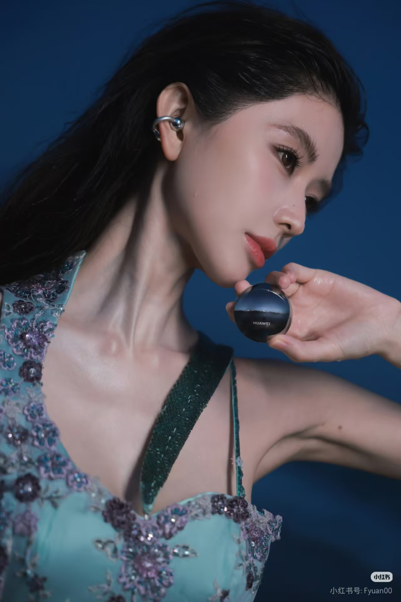

STYLE NARRATIVE
风格叙事

复古胶片 / Film Tone
修图思路：
模拟颗粒质感与青中带绿的暗部。故意降低高光纯度，让色彩带上时间的沉淀感。不追求绝对的清晰，而追求故事的呼吸感。
通透纯净 / Clean Clear
修图思路：
校正皮肤杂色，提高光影的清透度。重点在于“去黄去噪”，让皮肤呈现剥壳鸡蛋般的自然光泽，像清晨拂面的一阵凉风。
盛夏意象 / High Saturation
修图思路：
高饱和并不意味着廉价。我们精准提取并放大主体色彩（如红、蓝、绿），同时压暗背景，制造强烈的视觉冲击与情绪张力。